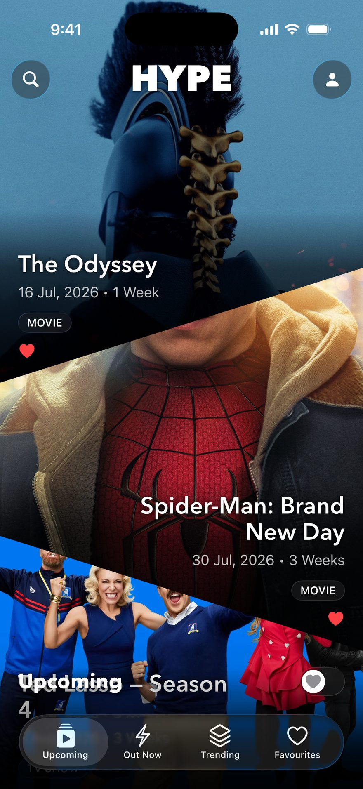
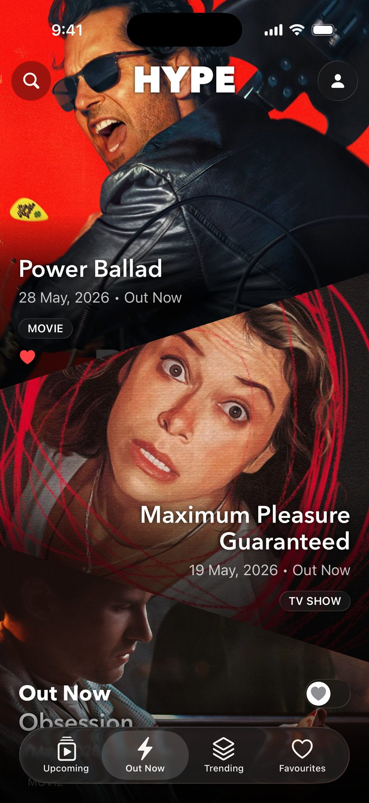
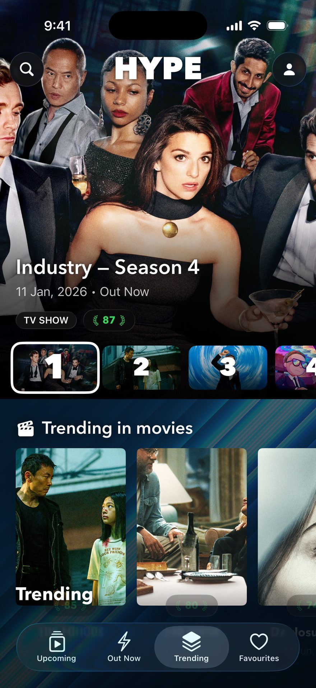
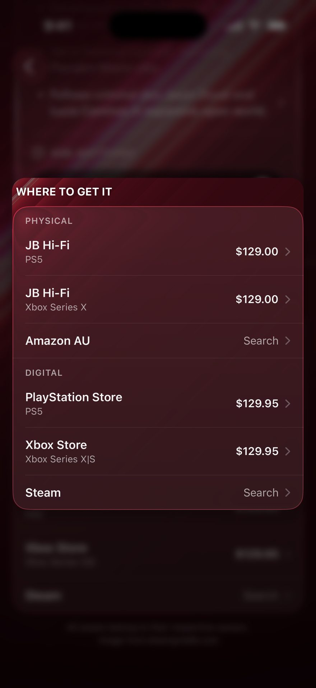
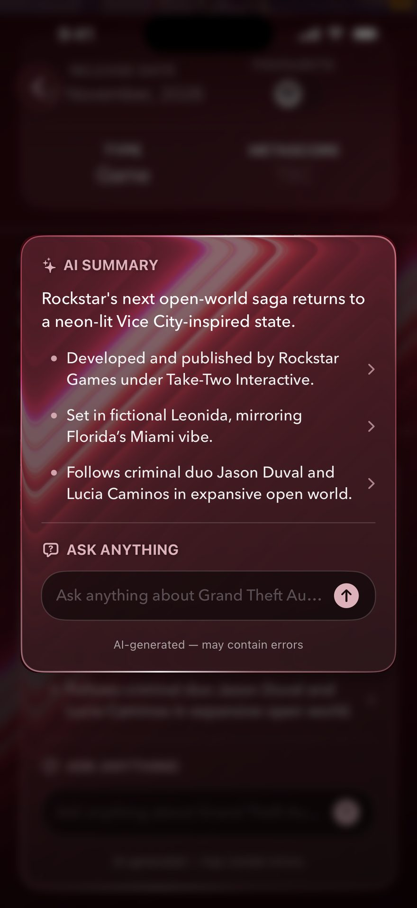
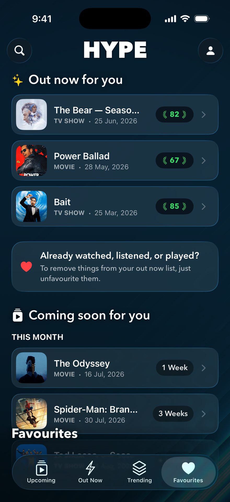

Everything you watch, play and listen to in one feed.
HYPE tracks what’s coming and what just landed, with critic scores, where to get it, and an alert the day it drops.
- Movies
- TV shows
- Music
- Games
FreeSign in with AppleNo ads, no trackingiPhone

What’s coming. What’s out.
Films, TV seasons, albums and games sit together, in date order. Upcoming shows what’s still to come. Out Now shows what just landed. No more juggling four apps and a notes file.
- Date ordered
- Two tabs
- Nothing to configure

Know if it’s worth your time.
Every title carries a critic score — films, TV shows, games and albums alike. Television is scored season by season, not just series-wide.
Trending ranks by score, so the good stuff rises to the top on its own.
- Per season
- Every media type
- Ranked, not shuffled

Stream it, watch it or buy it.
Every title tells you where it actually is — which services are streaming it, which stores are selling it, and what the disc or the download costs.
- Streaming
- Console stores
- Disc and digital

Catch up in ten seconds.
A short, spoiler-free brief on any title — who made it, what it’s about, why people care. Ask Anything answers follow-up questions on the same page.
- Spoiler free
- Ask follow-ups

Never miss a drop.
Favourite anything you’re waiting on. HYPE sends one notification the day it lands — and your list follows you to every device you sign in on.
- One alert, on the day
- Synced to your account

Something broken? Tell us.
Questions, bugs, a title we have got wrong, or a request to delete your account — email us and a human will read it.